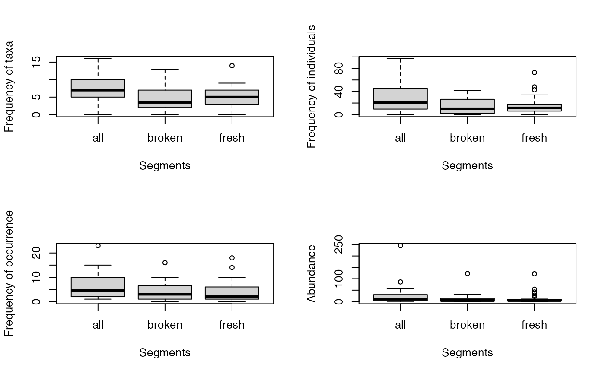
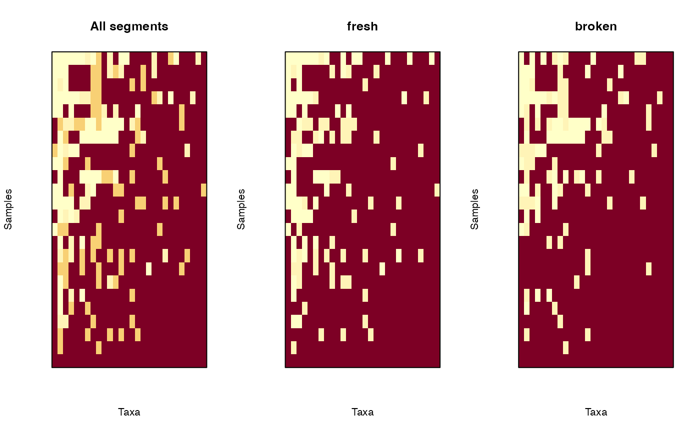
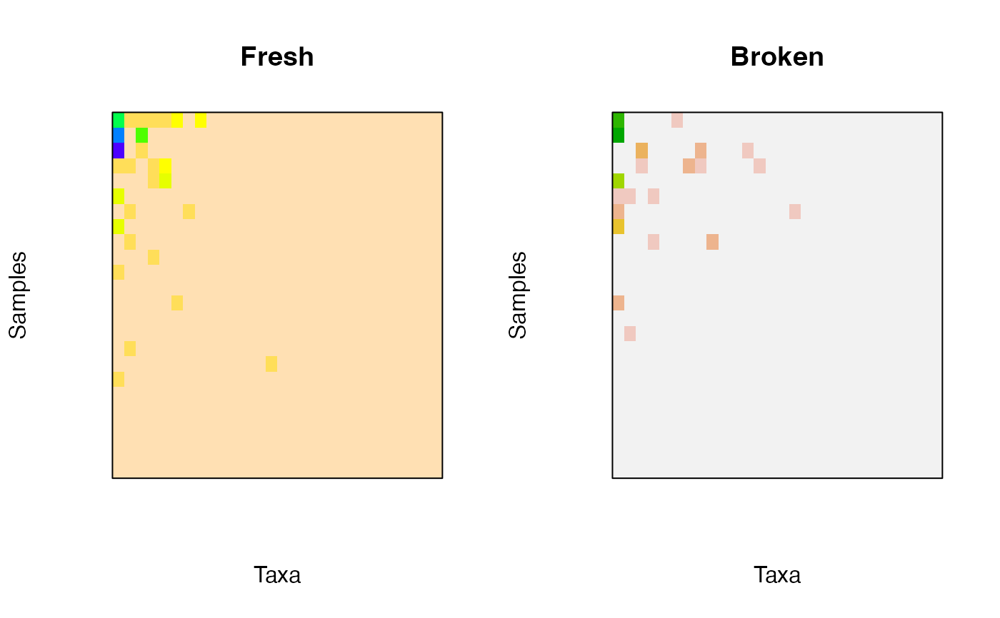

plot.mefa.RdVarious methods for plotting objects of class 'mefa'.
# S3 method for mefa
plot(x, stat = 1:4, type = c("hist", "rank"),
trafo = c("none", "log", "ratio"), show = TRUE, ylab, xlab, ...)
# S3 method for mefa
boxplot(x, stat = 1:4, all = TRUE, show = TRUE, ylab, xlab, ...)
# S3 method for mefa
image(x, segm=NULL, trafo=c("none", "log", "bins", "prab"),
probs = seq(0, 1, 0.05), ordering = TRUE, reverse = TRUE, names = FALSE,
show = TRUE, ylab, xlab, ...)
# S3 method for stcs
plot(x, stat = 1:4, type = c("hist", "rank"),
trafo = c("none", "log", "ratio"), show = TRUE, ylab, xlab, ...)
# S3 method for stcs
boxplot(x, stat = 1:4, all = TRUE, show = TRUE, ylab, xlab, ...)
# S3 method for stcs
image(x, segm=NULL, trafo=c("none", "log", "bins", "prab"),
probs = seq(0, 1, 0.05), ordering = TRUE, reverse = TRUE, names = FALSE,
show = TRUE, ylab, xlab, ...)an object of class 'mefa' or 'stcs'.
numeric, to determine which characteristic to plot. 1: number of species in samples (default), 2: total number of individuals in samples, 3: number of occurrences per taxa, 4 number of individuals per taxa.
character, "hist" produces barchart for discrete values and histogram for continuous values (default), "rank" ranked curves based on the characteristic defined by stat.
character, transformation of the plotted variable. "none": no transformation (default), "log": logarithmic transformation (base 10), "ratio": normalizes values by the maximum and rescales to the [0, 1] interval (useful for plotting multiple rank abundance curves), "bins": recodes the values according to quantiles based on probs, "prab": presence absence transformation of count data.
logical, if TRUE values of stat is plotted for all segments too on the boxplot.
character to overwrite default label for the y and x axes. If NULL, than default labels are returned on the plot.
if NULL the x$xtab matrix is used for plotting. Otherways, this defines the segment (one element in x$segm) for plotting (can be numeric or character with the name of the segment).
numeric vector of probabilities with values in [0, 1] (passed internally to qvector).
logical, if TRUE (default) the samples-by-taxa matrix is ordered by row and columns sums, if FALSE row and columns are not rearranged.
logical, if the values to plot should be reversed (TRUE, default, original zero values are lightly, while higher values are strongly coloured) or not (FALSE). This is related to col argument of the generic function image. Currently, heat.colors is the default color scheme.
logical, it labels samples and taxa in the plot using names in x. If it is a logical vector of length 2, sample and taxa names are returned accordingly.
logical, produce a plot (TRUE) or not (FALSE). FALSE can be useful, if the returned plotted values are reused (e.g. the matrix returned invisibly image can be used by filled.contour, or multiple values are used in one plot).
further arguments to pass to plotting functions. See especially zlim and col arguments of the generic function image, and arguments for the generic function boxplot.
plot returns barchart/histogram, or ranked curve of summary statistics (number of species, individuals in samples, number of occurrences or abundance of taxa) based on the x$xtab matrix of the 'mefa' objects. These values are basically returned by summary.mefa.
boxplot returns box-and-whiskers plots for the summary statistics based on matrices for each segments in x$segm.
image creates a grid of colored rectangles with colors corresponding to the values in the segment defined by the argument segm. If ordering = TRUE, the ordering of the segment will be based on the x$xtab matrix and not on the matrix for the segment itself. This is due to better comparison among segments.
All graphical display methods for objects of class 'stcs' are based on the conversion of the object into 'mefa', and than the respective plotting method is applied. The conversion is made based on the default mefa settings (e.g. with segments). If more control is needed over the object structure, use the mefa function to coerce to a more appropriate class for this.
All methods produce a plot if show = TRUE, and return the plotted values invisibly, or visibly if show = FALSE.
S\'olymos P. (2008) mefa: an R package for handling and reporting count data. Community Ecology 9, 125--127.
S\'olymos P. (2009) Processing ecological data in R with the mefa package. Journal of Statistical Software 29(8), 1--28. doi:10.18637/jss.v029.i08
data(dol.count, dol.samp, dol.taxa)
x <- mefa(stcs(dol.count), dol.samp, dol.taxa)
## Frequency distributions
opar <- par(mfrow=c(2,2))
plot(x, 1)
plot(x, 2)
plot(x, 3)
plot(x, 4)
par(opar)
## Ranked curves
opar <- par(mfrow=c(2,2))
plot(x, 1, type="rank")
plot(x, 2, type="rank")
plot(x, 3, type="rank")
plot(x, 4, type="rank")
par(opar)
## Boxplot for segments
opar <- par(mfrow=c(2,2))
boxplot(x, 1)
boxplot(x, 2)
boxplot(x, 3)
boxplot(x, 4)

par(opar)
## Image (levelplot)
## comparing all and the segments
opar <- par(mfrow=c(1,3))
image(x, trafo = "bins", main = "All segments")
image(x, segm = 1, trafo = "bins", main = dimnames(x)$segm[1])
image(x, segm = 2, trafo = "bins", main = dimnames(x)$segm[2])

par(opar)
## For black and white, with names
image(x, col = grey(seq(0, 1, 0.1)), names = TRUE)
## For nice colors other than default
opar <- par(mfrow=c(1,2))
image(x[,,"fresh"], col = topo.colors(10),
main = "Fresh")
image(x[,,"broken"], col = terrain.colors(10),
main = "Broken")

par(opar)